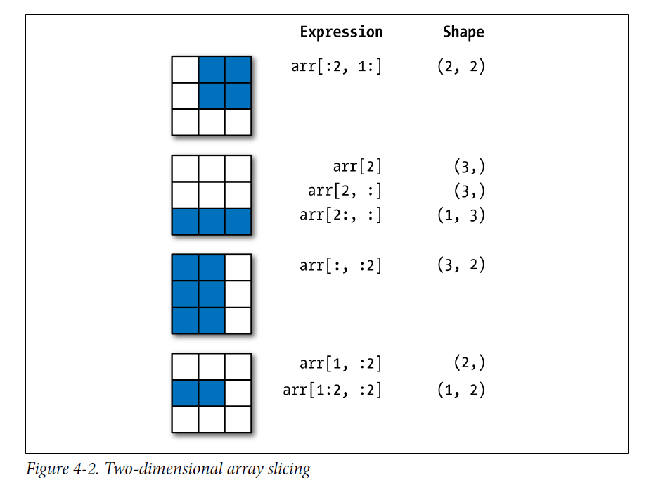

Python NumPy包总结
1 安装
在终端中输入:
pip install numpy调用numpy
import numpy as np
np.__version__## '1.16.4'2 Numpy中的数据格式
| Data type | Description |
|---|---|
| bool_ Boolean | (True or False) stored as a byte |
| int_ Default | integer type (same as C long; normally either int64 or int32) |
| intc | Identical to C int (normally int32 or int64) |
| intp | Integer used for indexing (same as C ssize_t; normally either int32 or int64) |
| int8 | Byte (–128 to 127) |
| int16 | Integer (–32768 to 32767) |
| int32 | Integer (–2147483648 to 2147483647) |
| int64 | Integer (–9223372036854775808 to 9223372036854775807) |
| uint8 | Unsigned integer (0 to 255) |
| uint16 | Unsigned integer (0 to 65535) |
| uint32 | Unsigned integer (0 to 4294967295) |
| uint64 | Unsigned integer (0 to 18446744073709551615) |
| float_ | Shorthand for float64 |
| float16 | Half-precision float: sign bit, 5 bits exponent, 10 bits mantissa |
| float32 | Single-precision float: sign bit, 8 bits exponent, 23 bits mantissa |
| float64 | Double-precision float: sign bit, 11 bits exponent, 52 bits mantissa |
| complex_ | Shorthand for complex128 |
| complex64 | Complex number, represented by two 32-bit floats |
| complex128 | Complex number, represented by two 64-bit floats |
3 Numpy array基础
3.1 Array的属性
先生成三个不同的array,一维,二维和三维array.
import numpy as np
np.random.seed(0)#设置seed,保证重复性
x1 = np.random.randint(10, size = 6)#一维
x2 = np.random.randint(10, size = (3, 4))#二维
x3 = np.random.randint(10, size = (3, 4, 5))#三维
x1## array([5, 0, 3, 3, 7, 9])x2## array([[3, 5, 2, 4],
## [7, 6, 8, 8],
## [1, 6, 7, 7]])x3## array([[[8, 1, 5, 9, 8],
## [9, 4, 3, 0, 3],
## [5, 0, 2, 3, 8],
## [1, 3, 3, 3, 7]],
##
## [[0, 1, 9, 9, 0],
## [4, 7, 3, 2, 7],
## [2, 0, 0, 4, 5],
## [5, 6, 8, 4, 1]],
##
## [[4, 9, 8, 1, 1],
## [7, 9, 9, 3, 6],
## [7, 2, 0, 3, 5],
## [9, 4, 4, 6, 4]]])每一个array都有ndim,shape和size属性.
print(x1.ndim, x1.shape, x1.size)## 1 (6,) 6print(x2.ndim, x2.shape, x2.size)## 2 (3, 4) 12print(x3.ndim, x3.shape, x3.size)## 3 (3, 4, 5) 60从上面例子可以看出来这三个属性分别代表什么意思.
ndim属性:该数据是几维数据.shape属性:该数据每个维度的大小,这个可以看作是R中的dim()函数得到的内容.size属性:该数据的总的cell数目.
dtype属性是指array的数据类型.
print(x1.dtype, x2.dtype, x3.dtype)## int32 int32 int323.2 Array索引:获得其中单个元素
array的索引跟python中内置的列表非常像,可以使用位置索引,但是同样注意从0开始算起.
x1## array([5, 0, 3, 3, 7, 9])x1[0]## 5x1[-1]#倒数第一个元素## 9对于多维,比如二维array,则跟R中的数据框类似,使用逗号分开行和列的索引.
x2## array([[3, 5, 2, 4],
## [7, 6, 8, 8],
## [1, 6, 7, 7]])x2[0,0]## 3x2[0,0] = 10
x2## array([[10, 5, 2, 4],
## [ 7, 6, 8, 8],
## [ 1, 6, 7, 7]])x2[0,0]## 103.3 Array切片:获得一个subarray
类似于列表,可以这样切片:
list[start🔚step]需要强调一次再,取出的subarray不包括end.
3.3.1 一维array
x = np.arange(10)
x## array([0, 1, 2, 3, 4, 5, 6, 7, 8, 9])x[:5]#前五个元素## array([0, 1, 2, 3, 4])x[4:7]#前五个元素## array([4, 5, 6])x[::2]#前五个元素## array([0, 2, 4, 6, 8])x[::-1]#将array反向排列## array([9, 8, 7, 6, 5, 4, 3, 2, 1, 0])3.3.2 多维array
多维数组跟一致数组一样,只是需要使用逗号把不同维度的切片分开即可.
array[start🔚step,start:end;step]x2## array([[10, 5, 2, 4],
## [ 7, 6, 8, 8],
## [ 1, 6, 7, 7]])x2[1:3, 1:3]## array([[6, 8],
## [6, 7]])x2[::-1, ::-1]## array([[ 7, 7, 6, 1],
## [ 8, 8, 6, 7],
## [ 4, 2, 5, 10]])如果对于行或者列只取出一个,会出现什么情况呢?
x2## array([[10, 5, 2, 4],
## [ 7, 6, 8, 8],
## [ 1, 6, 7, 7]])x2[1:3, 0]## array([7, 1])x2[1:3, 0].ndim## 1可以看到,降维了.

3.4 重塑array的形状
array的形状,上面简单介绍了,指的就是数组的各个维度的大小.比较常用的是reshape方法.
grid = np.arange(1, 10)
grid## array([1, 2, 3, 4, 5, 6, 7, 8, 9])grid.reshape((3,3))## array([[1, 2, 3],
## [4, 5, 6],
## [7, 8, 9]])3.5 Array的合并和分裂(Concatenation and Splitting)
3.5.1 合并array
将两个array合并为一个array,可以使用函数concatenate,是numpy中的函数.
x = np.array([1, 2, 3])
y = np.array([3, 2, 1])
z = [99, 99, 99]
np.concatenate([x, y, z])## array([ 1, 2, 3, 3, 2, 1, 99, 99, 99])可以看到,需要将array放在一个list(中括号)中.
还可以用于二维array的合并.
grid = np.array([[1, 2, 3],
[4, 5, 6]])
grid## array([[1, 2, 3],
## [4, 5, 6]])np.concatenate([grid, grid])## array([[1, 2, 3],
## [4, 5, 6],
## [1, 2, 3],
## [4, 5, 6]])可以看到,这样类似于R中的数据库的rbind功能,将array按照列进行合并.
那么如何实现cbind效果呢?
np.concatenate([grid, grid], axis=1)## array([[1, 2, 3, 1, 2, 3],
## [4, 5, 6, 4, 5, 6]])其实还可以使用更为形象的函数,np.vstack(相当于R中的rbind),和np.hstack(相当于R中的cbind).
x = np.array([1, 2, 3])
grid = np.array([[9, 8, 7],
[6, 5, 4]])
np.vstack([x, grid])## array([[1, 2, 3],
## [9, 8, 7],
## [6, 5, 4]])y = np.array([[99],
[99]])
np.hstack([grid, y])## array([[ 9, 8, 7, 99],
## [ 6, 5, 4, 99]])3.5.2 分割array
分割array有几个函数.
np.split,np.hsplit,和np.vsplit.看几个例子就明白了.
x = [1, 2, 3, 99, 99, 3, 2, 1]
x## [1, 2, 3, 99, 99, 3, 2, 1]x1, x2, x3 = np.split(x, [3, 5])
x1## array([1, 2, 3])x2## array([99, 99])x3## array([3, 2, 1])对于函数split,第一参数是要分割的列表,第二个参数需要是一个list,代表从哪分割,比如这里面的[3,5],就代表着将列表分割为三段,分别是[:3],[3:5],[5:].
同样对于hsplit和vsplit也就比较好理解了,分别是对多维array进行垂直和水平切割.
grid = np.arange(16).reshape((4, 4))
grid## array([[ 0, 1, 2, 3],
## [ 4, 5, 6, 7],
## [ 8, 9, 10, 11],
## [12, 13, 14, 15]])upper, lower = np.vsplit(grid, [2])
print(upper)## [[0 1 2 3]
## [4 5 6 7]]print(lower)## [[ 8 9 10 11]
## [12 13 14 15]]left, right = np.hsplit(grid, [2])
print(left)## [[ 0 1]
## [ 4 5]
## [ 8 9]
## [12 13]]print(right)## [[ 2 3]
## [ 6 7]
## [10 11]
## [14 15]]4 在Numpy array上进行运算
对array进行运算有一点非常重要,就是进行向量化操作(vectorized operations),跟R一样.这样的好处时可以提高运算速度.
4.1 Universal Functions(UFuncs)
举一个简单的例子,给定一组数,计算每个数的倒数.如果用以前的思维,那么应该对每一个数分别计算倒数,然后循环.但是其实大可不必.
import numpy as np
values = np.arange(1,10)
values## array([1, 2, 3, 4, 5, 6, 7, 8, 9])1/values## array([1. , 0.5 , 0.33333333, 0.25 , 0.2 ,
## 0.16666667, 0.14285714, 0.125 , 0.11111111])这在R中的基础数据格式,向量中就可以运行的,但是对python的基础数据格式,列表和tuple是不可以的.
list(range(1,10))
# 1/list(range(1,10))## [1, 2, 3, 4, 5, 6, 7, 8, 9]也就是说列表是不支持向量化操作的,只有在numpy的array上才可以.
所以,可以将numpy中的一维array想象成是R中的向量,这样就好记住多了.
那么,同样的,两个一维array也可以像R向量一样,做向量化的操作.比如+,÷等.但是两个array的长度必须相等,否则报错.
np.arange(1,10)/np.arange(2,11)## array([0.5 , 0.66666667, 0.75 , 0.8 , 0.83333333,
## 0.85714286, 0.875 , 0.88888889, 0.9 ])np.arange(1,10) + np.arange(2,11)## array([ 3, 5, 7, 9, 11, 13, 15, 17, 19])np.arange(1,10) - np.arange(2,11)## array([-1, -1, -1, -1, -1, -1, -1, -1, -1])当然,向量化的操作并不局限于一维的array,对于二维的array同样适用,只要将其对比为R中的数据框即可.当然,也可以二维和一维操作,这时候是按照每行都对同一个一维array分别操作进行的.
test = np.arange(1,10)
test = test.reshape((3,3))
test2 = np.arange(2,11).reshape((3,3))
test3 = np.array([1,2,3])
test## array([[1, 2, 3],
## [4, 5, 6],
## [7, 8, 9]])test2## array([[ 2, 3, 4],
## [ 5, 6, 7],
## [ 8, 9, 10]])test3## array([1, 2, 3])test + test2## array([[ 3, 5, 7],
## [ 9, 11, 13],
## [15, 17, 19]])test/test2## array([[0.5 , 0.66666667, 0.75 ],
## [0.8 , 0.83333333, 0.85714286],
## [0.875 , 0.88888889, 0.9 ]])test/test3## array([[1. , 1. , 1. ],
## [4. , 2.5, 2. ],
## [7. , 4. , 3. ]])再来看一个例子:
import numpy as np
x = np.random.randn(8)
y = np.random.randn(8)
x## array([ 1.25441407, 1.41910204, -0.74385608, -2.5174371 , -1.50709602,
## 1.14907613, -1.19357825, 1.14104245])y## array([ 1.50944508, 1.06777513, -0.68658948, 0.01487332, -0.3756659 ,
## -0.03822364, 0.36797447, -0.0447237 ])np.maximum(x, y)## array([ 1.50944508, 1.41910204, -0.68658948, 0.01487332, -0.3756659 ,
## 1.14907613, 0.36797447, 1.14104245])可以看到,np.maximum()函数对两个array的同一位置上的数取最大值,返回与输入array长度相同的array.
如果两个array长度不同,则报错.
常见的接受一个array的ufuncs:
| Function | Description |
|---|---|
abs,fabs |
Compute the absolute value element-wise for integer, floating-point, or complex values |
sqrt |
Compute the square root of each element (equivalent to arr ** 0.5) |
square |
Compute the square of each element (equivalent to arr ** 2) |
exp |
Compute the exponent ex of each element |
log, log10, log2, log1p |
Natural logarithm (base e), log base 10, log base 2, and log(1 + x), respectively |
sign |
Compute the sign of each element: 1 (positive), 0 (zero), or –1 (negative) |
ceil |
Compute the ceiling of each element (i.e., the smallest integer greater than or equal to that |
number)
floor | Compute the floor of each element (i.e., the largest integer less than or equal to each element)
rint | Round elements to the nearest integer, preserving the dtype
modf | Return fractional and integral parts of array as a separate array
isnan | Return boolean array indicating whether each value is NaN (Not a Number)
isfinite, isinf | Return boolean array indicating whether each element is finite (non-inf, non-NaN) or infinite,
respectively
cos, cosh,sin,sinh,tan,tanh | Regular and hyperbolic trigonometric functions
arccos, arccosh, arcsin, arcsinh, arctan, arctanh | Inverse trigonometric functions logical_not Compute truth value of not x element-wise (equivalent to ~arr).
常见的接受两个array的ufuncs:
| Function | Description |
|---|---|
add |
Add corresponding elements in arrays |
subtract |
Subtract elements in second array from first array |
multiply |
Multiply array elements |
divide, floor_divide |
Divide or floor divide (truncating the remainder) |
power |
Raise elements in first array to powers indicated in second array |
maximum, fmax |
Element-wise maximum; fmax ignores NaN |
minimum, fmin |
Element-wise minimum; fmin ignores NaN |
mod |
Element-wise modulus (remainder of division) |
copysign Copy sign of values in second argument to values in first argument
greater, greater_equal, less, less_equal, equal, not_equal | Perform element-wise comparison, yielding boolean array (equivalent to infix operators >, >=, <, <=, ==, !=)
logical_and, logical_or, logical_xor | Compute element-wise truth value of logical operation (equivalent to infix operators & |, ^)
4.2 面向数组的编程
一般来说,使用向量化操作,会比loop循环至少快上一个数量级.
4.2.1 Expressing Conditional Logic as Array Operations
import numpy as np
xarr = np.array([1.1, 1.2, 1.3, 1.4, 1.5])
yarr = np.array([2.1, 2.2, 2.3, 2.4, 2.5])
cond = np.array([True, False, True, True, False])
result = [(x if c else y) for x, y, c in zip(xarr, yarr, cond)]
result## [1.1, 2.2, 1.3, 1.4, 2.5]这种办法问题很多.我们可以使用np.where()函数来做.
result = np.where(cond, xarr, yarr)
result## array([1.1, 2.2, 1.3, 1.4, 2.5])arr = np.random.randn(4, 4)
arr## array([[-0.30237513, -2.2244036 , 0.72400636, 0.35900276],
## [ 1.07612104, 0.19214083, 0.85292596, 0.01835718],
## [ 0.42830357, 0.99627783, -0.49114966, 0.71267817],
## [ 1.11334035, -2.15367459, -0.41611148, -1.07089699]])arr > 0## array([[False, False, True, True],
## [ True, True, True, True],
## [ True, True, False, True],
## [ True, False, False, False]])np.where(arr > 2, 2, -2)## array([[-2, -2, -2, -2],
## [-2, -2, -2, -2],
## [-2, -2, -2, -2],
## [-2, -2, -2, -2]])np.where(arr > 0, 2, arr)## array([[-0.30237513, -2.2244036 , 2. , 2. ],
## [ 2. , 2. , 2. , 2. ],
## [ 2. , 2. , -0.49114966, 2. ],
## [ 2. , -2.15367459, -0.41611148, -1.07089699]])np.random.randn()函数用来随机产生二维的array.
4.2.2 Numpy中的数学和统计方法
随机产生正态分布数据.
arr = np.random.randn(5, 4)
arr## array([[ 0.22113881, -1.12305712, -1.05075796, 1.01207905],
## [ 1.54371643, -0.40211489, 0.8647491 , -0.22686923],
## [ 0.81116027, 0.28779461, -0.53846816, 1.9084621 ],
## [-0.475776 , 1.44073112, -1.14907568, 0.80571455],
## [ 1.75610703, 0.97297991, -1.55111911, 0.19114348]])arr.mean()## 0.2649269161929305np.mean(arr)## 0.2649269161929305arr.max()## 1.9084621003056945np.max(arr)## 1.9084621003056945arr.min()## -1.5511191116398637np.min(arr)## -1.5511191116398637arr.sum()## 5.298538323858611np.sum(arr)## 5.298538323858611对于这些方法,都有一个参数,axis,用来指示是否按行或者按列进行计算.0代表按行,1代表按列.
arr.mean(axis=0)## array([ 0.77126931, 0.23526673, -0.68493436, 0.73810599])arr.mean(axis=1)## array([-0.2351493 , 0.44487035, 0.61723721, 0.1553985 , 0.34227783])arr = np.array([0, 1, 2, 3, 4, 5, 6, 7])
arr## array([0, 1, 2, 3, 4, 5, 6, 7])arr.cumsum()#累乘## array([ 0, 1, 3, 6, 10, 15, 21, 28], dtype=int32)arr = np.array([[0, 1, 2], [3, 4, 5], [6, 7, 8]])
arr## array([[0, 1, 2],
## [3, 4, 5],
## [6, 7, 8]])arr.cumsum(axis=0)## array([[ 0, 1, 2],
## [ 3, 5, 7],
## [ 9, 12, 15]], dtype=int32)arr.cumsum(axis=1)## array([[ 0, 1, 3],
## [ 3, 7, 12],
## [ 6, 13, 21]], dtype=int32)array常用统计方法总结
| Method | meaning |
|---|---|
sum |
Sum of all the elements in the array or along an axis; zero-length arrays have sum 0 |
mean |
Arithmetic mean; zero-length arrays have NaN mean |
std, var |
Standard deviation and variance, respectively, with optional degrees of freedom adjustment (default |
denominator n)
min, max | Minimum and maximum
argmin, argmax | Indices of minimum and maximum elements, respectively
cumsum | Cumulative sum of elements starting from 0
cumprod | Cumulative product of elements starting from 1
4.2.3 排序(sorting)
使用sort方法来对array进行排序.
arr = np.random.randn(6)
arr## array([ 1.60477607, -1.42002593, -2.44378268, -2.05633855, -0.99225755,
## 1.01128532])arr.sort()
arr## array([-2.44378268, -2.05633855, -1.42002593, -0.99225755, 1.01128532,
## 1.60477607])arr = np.random.randn(5, 3)
arr## array([[ 1.40044008, -0.65499168, -0.25579069],
## [-0.71438561, -0.50083877, 0.05564534],
## [-0.48896178, -0.37992245, 0.25973465],
## [-1.68134864, -0.91679481, -0.1192241 ],
## [-0.44627728, -2.14335544, 0.01003777]])arr.sort(axis=0)
arr.sort(axis=1)4.2.4 Unique and Other Set Logic
names = np.array(['Bob', 'Joe', 'Will', 'Bob', 'Will', 'Joe', 'Joe'])
names## array(['Bob', 'Joe', 'Will', 'Bob', 'Will', 'Joe', 'Joe'], dtype='<U4')np.unique(names)## array(['Bob', 'Joe', 'Will'], dtype='<U4')sorted(names)## ['Bob', 'Bob', 'Joe', 'Joe', 'Joe', 'Will', 'Will']sorted(set(names))## ['Bob', 'Joe', 'Will']总结
| Functions | meaning |
|---|---|
unique(x) |
Compute the sorted, unique elements in x |
intersect1d(x, y) |
Compute the sorted, common elements in x and y |
union1d(x, y) |
Compute the sorted union of elements |
in1d(x, y) |
Compute a boolean array indicating whether each element of x is contained in y |
setdiff1d(x, y) |
Set difference, elements in x that are not in y |
setxor1d(x, y) |
Set symmetric differences; elements that are in either of the arrays, but not both |
4.2.5 array数据的输入和的输出
跟R的save和load比较像.
arr = np.arange(10)
arr## array([0, 1, 2, 3, 4, 5, 6, 7, 8, 9])np.save(file='some_array', arr=arr)默认的后缀民为.npy.然后可以使用np.load()函数load.
np.load('some_array.npy')## array([0, 1, 2, 3, 4, 5, 6, 7, 8, 9])Xiaotao Shen
Postdoctoral Research Fellow
Metabolomics, Multi-omics, Bioinformatics, Systems Biology.